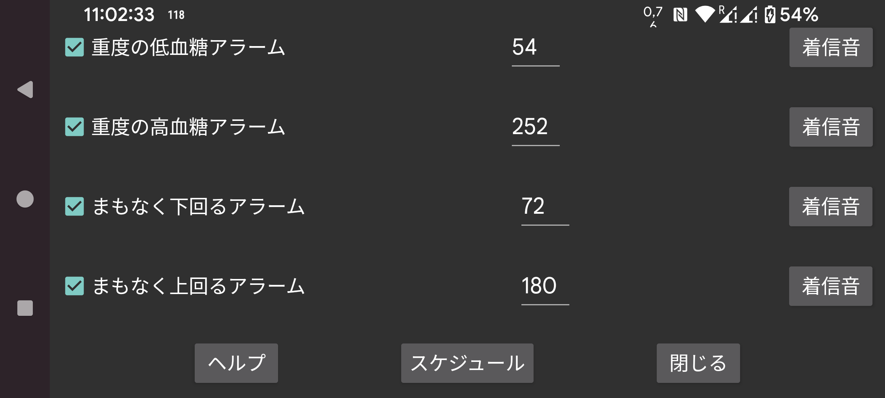

低血糖アラームよりさらに低い値で発動する2つ目の低血糖アラームです。
高血糖アラームよりさらに高い値で発動する2つ目の高血糖アラームです。
血糖値の低下によって、もうすぐ指定値を下回ると見込まれるときに発動するアラームです。
血糖値の上昇によって、もうすぐ指定値を上回ると見込まれるときに発動するアラームです。
特定のプロファイルを1日のうちの指定の時刻に有効化するスケジュールを設定します。これにより、昼夜で異なる血糖しきい値や着信音を使ったり、夜間は血糖値の音声読み上げを自動でオフにしたりできます。